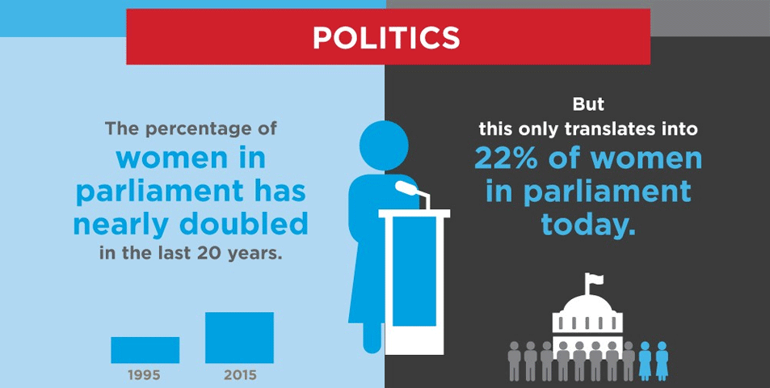

Use the slider in the interactive map to investigate the percent of women in parliament between 1990-2019.
There are only three countries in the world where women outnumber men in parliament: Rwanda, Cuba, and Bolivia. Between 1995 and 2015 the percentage of women in parliament world-wide nearly doubled. However, this is still only about 22% of seats held by women in parliament.
The United Nations has set a goal for parliaments to be 50:50 by the year 2030.
Data from the United Nations show great strides over the past 25 years in gender equality in politics but there is still much work to be done to reach the goal set for 2030. Use the interactive map above and see which countries are ahead of the goal and those that are behind the times.

The source of data is the Inter-Parliamentary Union (IPU), Geneva, "Women in Parliament" dataset and the Millennium Development Goals Indicators database.
Data are from UNdata, "a clearinghouse of global and country data produced by United Nations agencies and member countries. It includes economic, demographic, environmental, transporation, social, and other datasets."
Map created by A.Taylor, March 2020
University of Wisconsin-Madison - Master's in GIS & Web Map Programming
Lab 1: Geography 575 - Interactive Cartography and Geovisualization